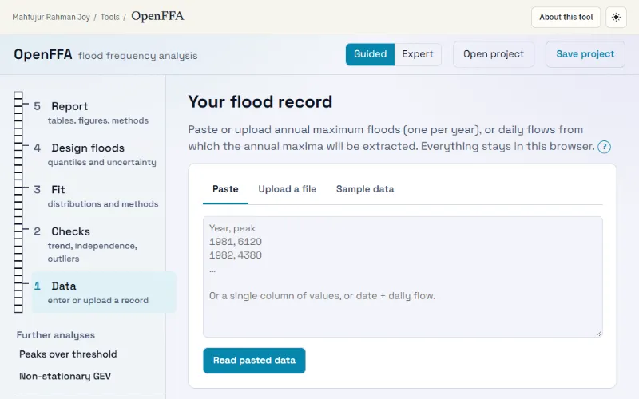

Analysis · Stable · version 0.3.0
About OpenFFA
Flood frequency analysis, validated against Bulletin 17C

What it does
Load annual peaks or a daily flow record and estimate design floods: checks for trend, change points, independence and low outliers, 11 distributions fitted by L-moments, maximum likelihood, moments or the Bulletin 17C Expected Moments Algorithm, bootstrap goodness of fit, four kinds of confidence interval, peaks over threshold and a non-stationary GEV. Tested against R, SciPy and the Bulletin 17C examples.
- 11 distributions: GEV, LP3, P3, Gumbel, GLO, LN2/LN3, Gamma, Weibull, GPA, Normal
- L-moments, ML (censored/historic), moments, PWM, Bulletin 17C EMA, Gumbel's method
- Mann-Kendall (Hamed-Rao), Pettitt, independence and Multiple Grubbs-Beck checks
- Bootstrap GOF p-values, AIC/AICc/BIC, L-moment ratio diagram
- Intervals: parametric/non-parametric bootstrap (BC, BCa), delta, profile likelihood
- Peaks over threshold (gap-aware, annual-maximum T) and non-stationary GEV
- Report with methods paragraph, Excel and project file
Problem
OpenFFA is a flood frequency analysis (FFA) tool that runs entirely in a web browser, with no server, no installation and no data upload. It is meant for water-resources engineers and researchers, with Bangladesh-style records (BWDB discharge and water-level series, April–March water years) as the main context, and it works for any annual-maximum or daily record.
Method
- Checks before fitting: record length and gaps; Mann-Kendall trend with the Hamed-Rao correction, plus the Theil-Sen slope; Pettitt change point; lag-1 autocorrelation and the Wald-Wolfowitz test; Mann-Whitney homogeneity; Grubbs-Beck (B17B) and Multiple Grubbs-Beck (B17C) outlier tests.
- 11 distributions: Normal, LN2, LN3, Gumbel, GEV, Pearson III, log-Pearson III, Gamma, Weibull, GLO, GPA.
- 6 estimation methods: L-moments, maximum likelihood (including censored/historic data), method of moments (B17B), PWM, the Expected Moments Algorithm of Bulletin 17C, and Gumbel's finite-sample method.
- Model comparison: KS, AD, CvM and PPCC statistics with bootstrap-calibrated p-values (not tables); AIC, AICc and BIC; L-moment ratio diagram; a transparent ranking with caveats.
- Design floods: any return periods; parametric/non-parametric bootstrap (percentile, BC or BCa limits), delta-method and profile-likelihood intervals; probability paper (Gumbel, normal, log-T, Weibull axes).
- Further analyses: peaks over threshold (declustering, mean residual life and parameter-stability plots, GPA, intervals that include the event-rate uncertainty) and a non-stationary GEV (trend in location/scale with a likelihood-ratio test).
- Heavy calculations run in a Web Worker with progress and Cancel. Bootstrap results are reproducible from a seed.
References used by the tool
- England, J.F., Jr., Cohn, T.A., Faber, B.A., Stedinger, J.R., Thomas, W.O., Jr., Veilleux, A.G., Kiang, J.E., Mason, R.R., Jr. (2018, v1.1 2019). Guidelines for determining flood flow frequency—Bulletin 17C. U.S. Geological Survey Techniques and Methods 4-B5. https://doi.org/10.3133/tm4B5
- Interagency Advisory Committee on Water Data (1982). Guidelines for Determining Flood Flow Frequency, Bulletin 17B. U.S. Geological Survey, Reston, VA.
- Hosking, J.R.M. (1990). L-moments: analysis and estimation of distributions using linear combinations of order statistics. Journal of the Royal Statistical Society B, 52(1), 105–124.
- Hosking, J.R.M., Wallis, J.R. (1997). Regional Frequency Analysis: An Approach Based on L-Moments. Cambridge University Press.
- Coles, S. (2001). An Introduction to Statistical Modeling of Extreme Values. Springer, London.
- Cohn, T.A., Lane, W.L., Baier, W.G. (1997). An algorithm for computing moments-based flood quantile estimates when historical flood information is available. Water Resources Research, 33(9), 2089–2096.
- Cohn, T.A., England, J.F., Berenbrock, C.E., Mason, R.R., Stedinger, J.R., Lamontagne, J.R. (2013). A generalized Grubbs-Beck test statistic for detecting multiple potentially influential low outliers in flood series. Water Resources Research, 49(8), 5047–5058.
- Stedinger, J.R., Vogel, R.M., Foufoula-Georgiou, E. (1993). Frequency analysis of extreme events. In: Maidment, D.R. (ed.), Handbook of Hydrology, ch. 18. McGraw-Hill.
- Gumbel, E.J. (1958). Statistics of Extremes. Columbia University Press, New York.
- Hamed, K.H., Rao, A.R. (1998). A modified Mann-Kendall trend test for autocorrelated data. Journal of Hydrology, 204, 182–196.
- Pettitt, A.N. (1979). A non-parametric approach to the change-point problem. Applied Statistics, 28(2), 126–135.
- Efron, B. (1987). Better bootstrap confidence intervals. Journal of the American Statistical Association 82(397), 171–185.
Data
Paste, CSV/TXT or Excel upload, with delimiter, header and date-format detection. Supports annual maxima or daily/sub-daily series with water-year extraction and completeness checks, historic floods (perception threshold), zero flows, low outliers and manual thresholds. The sample data are public domain (USGS) or come from Coles (2001) via R ismev, cited in each file. No Bangladeshi dataset is bundled; the monsoon sample is synthetic.
Bundled sample data
- Moose River, USGS 01134500: 68 annual peaks (ft³/s), water years 1947–2014 (Bulletin 17C Table 10-2)
- Orestimba Creek, USGS 11274500: 82 annual peaks, 12 zero years (Bulletin 17C Table 10-6)
- Santa Cruz River, USGS 09480000: 65 annual peaks 1949–2013 (Bulletin 17C Table 10-22)
- Moose River, USGS 01134500: daily mean discharge 1947–2014 (USGS NWIS daily-values service)
- Port Pirie annual max sea level, 1923–1987 (Coles 2001, via R package ismev)
- Fremantle annual max sea level and SOI (Coles 2001, via ismev)
- Synthetic monsoon river: 40 years of daily discharge (m³/s). Not real data
Validation
- Every estimator is compared automatically with independent implementations and published results.
- R: lmom 3.3 (Hosking), extRemes 2.2.1, ismev 1.43, MGBT 1.1.8 (USGS), trend 1.1.10. Python: SciPy 1.18, lmoments3, pymannkendall, pyhomogeneity.
- Bulletin 17C, Appendix 10 (PeakFQ results): Moose River (systematic record, weighted skew); Orestimba Creek (12 zeros, 30 low outliers); Santa Cruz River (22-year historic period plus 10 low outliers). EMA moments are reproduced to the printed 4 decimals and quantiles to the printed 4 significant figures.
- Coles (2001): Port Pirie (GEV ML, standard errors, normal and profile-likelihood intervals) and Fremantle (GEV with a linear trend).
- Generated by npm run validate on 2026-11-03. Total: 2558 numerical comparisons in 205 groups.
- Reference values were produced by running these packages, never typed from memory.
Limitations
- Methods not implemented: Kappa and Wakeby distributions; LH-moments; mixed-population (e.g. snowmelt + rain) models; regional frequency analysis (index flood, regional L-moment algorithm, discordancy and heterogeneity measures); Bayesian estimation (as in FLIKE / RMC-BestFit) and expected-probability adjustments.
- Bulletin 17C analytical EMA confidence intervals (Cohn et al. 2001) and the EMA skew MSE are not implemented. OpenFFA's EMA intervals are a parametric bootstrap that re-simulates the same censoring/historic design. Do not present them as the B17C interval.
- The non-stationary GEV allows linear trends in location and log-scale only, with a constant shape. There is no non-stationary GPA or LP3.
- Bootstrap interval coverage: in OpenFFA's simulations (n = 30, 90 % nominal, 100-year flood) the parametric bootstrap covered 86–87 %, the non-parametric percentile bootstrap 74–79 % and the non-parametric BCa 77–85 %. All under-cover somewhat; treat intervals as a lower bound on uncertainty.
- GOF tests have little power for typical record lengths (20–60 years). A large p-value is not evidence that a distribution is correct.
- Confidence intervals describe sampling uncertainty under the chosen model. They exclude model choice, rating-curve and measurement errors, and non-stationarity.
- The MGBT decision can be sensitive near the significance cut-off. In Bulletin 17C Example 2 (Orestimba Creek), the USGS MGBT R package and OpenFFA find 38 PILFs where PeakFQ 7.1 found 30. Use judgement and the manual threshold.
- No Bangladeshi dataset is bundled; the monsoon sample is synthetic.
How to cite
Joy, Mahfujur Rahman (2026). OpenFFA: browser-based flood frequency analysis (version 0.3.0, released 2026-11-03). https://meawman.github.io/tools/openffa/